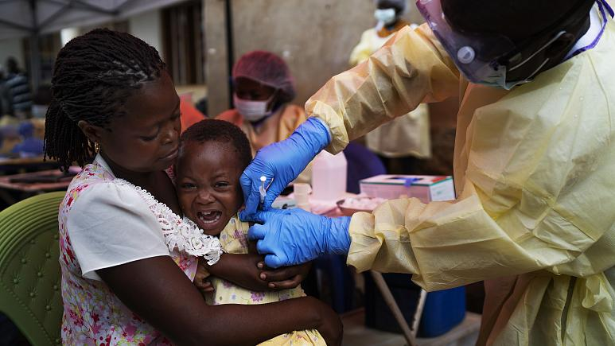

Coronavirus: COVID-19 pandemic disrupting vaccination for at least 80 million babies, warns WHO
22 May 2020, 12:00 PM

At least 80 million babies are at risk of diseases such as diphtheria, measles and polio due to disrupted vaccinations, three international organisations have warned.
Routine vaccination efforts have been "substantially disrupted" in 68 countries due to the coronavirus pandemic, said officials from the World Health Organization, UNICEF, and Gavi, the Vaccine Alliance on Friday.
“Immunisation is one of the most powerful and fundamental disease prevention tools in the history of public health,” said WHO director-general Dr Tedros Adhanom Ghebreyesus in a statement.
The disruptions are due in part to parents' fear about catching coronavirus, healthcare worker's access to protective equipment and travel delays for the vaccinations.
Vaccination campaigns have been suspended in several countries due to the coronavirus pandemic including polio campaigns in 38 countries and measles campaigns in 27 countries.
At least 24 million people in many lower-income countries are at risk of missing out on vaccines against polio, measles, typhoid, yellow fever, cholera, rotavirus, HPV, meningitis A and rubella, the organisations said.
"We fear that COVID-19 is a health crisis that is quickly turning into a child rights' crisis," UNICEF executive director Henrietta Fore said at a WHO press conference.
"We cannot let our fight against one disease come at the expense of long term progress in the fight against other diseases. We cannot exchange one deadly outbreak for another," she added.
She implored countries to track unvaccinated children and said that they needed to address gaps in vaccine deliveries.
Lockdowns and border closures have also contributed to problems in supply chains and transport for vaccination supplies.
There is a decline in commercial flights, Fore said, and it is difficult to get charters, which creates gaps in vaccine deliveries as well.
WHO's director for immunisation, Dr Kate O'Brien, added that pathogens "don't recognise borders".
"We're all at risk when any country is at risk and as we say especially for measles which is one of the most transmissible pathogens is that measles anywhere is measles everywhere," Dr O'Brien said.
Seth Berkley, the head of Gavi, an international vaccine alliance organisation, called the scale of the pandemic's impact on vaccination "alarming".
"It's something we haven't seen in a lifetime," Berkley added.
The World Health Organization said they would put out guidance on how to conduct vaccination campaigns with protection measures in place due to COVID-19.